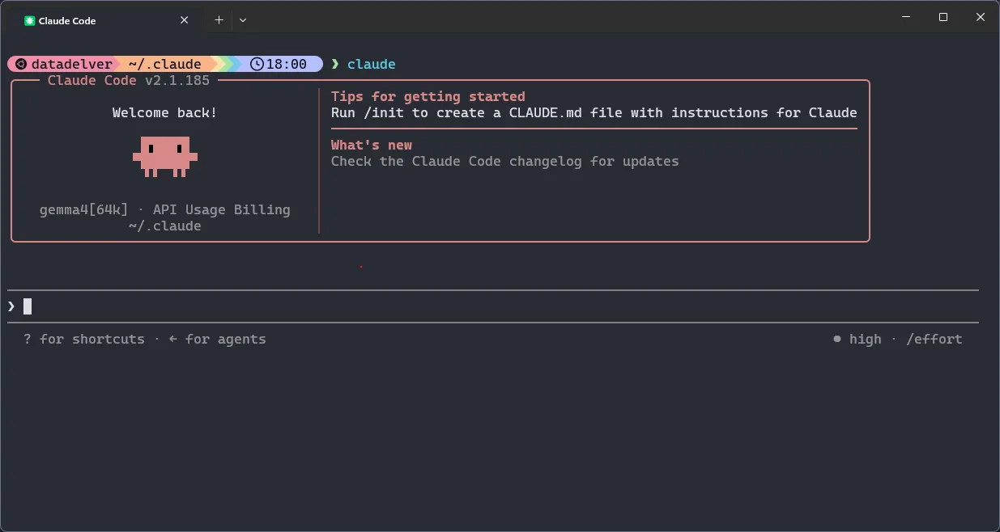
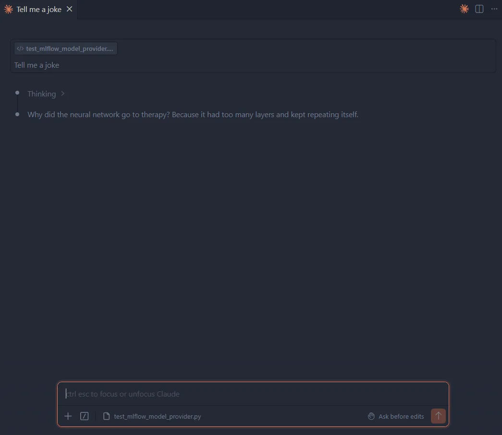

Delve 22: A Local Claude Code Redux
"It is not the strongest or the most intelligent who will survive but those who can best manage change." - Charles Darwin
Hello data delvers! It's been some time but I'm back with more delves! In the time since my previous delve the landscape for local llm development has already shifted quite a bit so I want to come back with a refreshed setup guide!
llama.cpp
I recently read an opinion piece by Zetaphor around the history of Ollama which I found quite compelling, as a result I resolved to shift my local setup to llama.cpp which thankfully was not all that complicated.
To get started, use your installer of choice to install llama.cpp on your machine.
Note
Since I use WSL as my primary dev environment I will be installing llama.cpp on Windows with winget and then connecting to WSL over a local network. This ensures that the model will have full access to all of my system RAM and GPU memory.
Even More LLMs
Since we are now using llama.cpp we have full access to the enormous library of models available on Hugging Face, since our last delve, some of the new models that have come out are:
-
Qwen3.6 - Positioned as the specialist for agentic, repository-level coding, this model series (27B dense / 35B MoE) from Alibaba differentiates itself by natively preserving its internal reasoning context across multi-turn conversations, preventing the cognitive degradation often seen in iterative development cycles.
-
Gemma 4 - Designed for extreme intelligence-per-parameter efficiency across diverse hardware, this multimodal family from Google spans from light on-device models up to a 31B dense variant, using per-layer embeddings to keep memory usage low while matching the knowledge footprint of much heavier models
-
Mistral Medium 3.5 - Serves as the high-capacity, unified enterprise engine (128B dense) that merges previously separate chat, math, and code architectures into one powerhouse; unlike the other two, it features configurable test-time compute, allowing you to scale its reasoning effort up for heavy asynchronous agent workflows or down for rapid-fire chat.
Now if that all sounded like AI-generated, uninterpretable jargon, that's because it was! In practice, I recommend reading up on each of the current models on resources such as r/LocalLLM to get a feel for what the community finds each model useful for.
After doing some of my own research I decided to select the Gemma4 family of models for my current setup.
Community For The Win!
One of the best parts about the Hugging Face community is that individuals often release optimized versions of models for specific tasks. For example, Yuxin Lu has created fine-tuned variants of the Gemma 4 12B model specifically for coding which you can grab here!
Warning
I'd be sure to do your own research before using community models to ensure they are safe.
Quant Selection
One of the best ways to fit a large model on your local device is to use quantization. When a model is trained, its weights are saved in a high-precision format, typically BF16 or FP16 (16-bit floating-point numbers). Quantization compresses these weights into lower-bit integers (such as 4-bit, 6-bit, or 8-bit).
Models often have a suffix to indicate what level of quantization was used to produce them such as Q4_K_M. These are colloquially referred to as "Quants" of a model. This is comprised of 3 parts:
-
Bit Depth (
Q4,Q6,Q8) — How many bits are used to store each weight; a lower number indicates higher compression and more performance loss. -
Quantization Method (
K) — The method used to produce the quantization.Kis the typical modern standard, though other older variants such as0exist as well. -
Granularity (
M) — Particularly withKQuants, you will see a suffix indicating its size (S,M,L), indicating the level of compression within that bit-depth.
With all that being said Q4_K_M tends to be the most popular size of quantization at it usually strikes a balance between required GPU memory size and model performance.
Launch 🚀
Once you've selected your model and quant size, the next step is to create a launch script. Here is the one (for PowerShell) that I'm using below:
Here's a brief breakdown of the flags:
Model & Source Management
Control exactly what to load and where to find it.
-
-hf "yuxinlu1/gemma-4-..."(Hugging Face Repository) Automatically check the Hugging Face Hub for the specified repository layout. If the model isn't found in your local ~/.cache/huggingface/ directory, it downloads it on the fly. -
-m "gemma4-v2-Q4_K_M.gguf"(Model File) Specifies the target file name to execute from within that Hugging Face repository snapshot. -
--alias "gemma4"(Model API Name) Names the endpoint's internal route. This is critical for tooling compatibility. When an agent like Claude Code hits your server requesting a model named gemma4, this flag ensures the server says, "Yes, that's me."
Hardware Allocation & Speed Levers
Dictate how aggressively the engine runs on the physical GPU.
-
-ngl 99(Number of GPU Layers) Offload 99 layers directly to the graphics card. Because Gemma 4 12B has far fewer than 99 layers, this acts as a safe catch-all to guarantee that 100% of the model is loaded into GPU memory, keeping processing off the slower CPU. -
-fa on(Flash Attention) Activates FlashAttention. This completely restructures the mathematical attention calculations, drastically dropping the memory required to track tokens and speeding up prompt ingestion.
KV Cache Quantization
Determine how tightly conversation memory is packed to save physical VRAM.
-
--cache-type-k q8_0(Key Cache Quantization) Compresses the "Key" states of your conversation history down to 8-bit integers. Keys are highly sensitive to loss of precision, so keeping them at 8-bit preserves the model's structural attention layout over long prompts. -
--cache-type-v q4_0(Value Cache Quantization) Squeezes the "Value" states down to a tight 4-bit footprint. Values are mathematically more forgiving of compression. Combining this with 8-bit Keys cuts the total 64K KV cache size by roughly 40%, giving gigabytes of physical overhead.
Context Size Architecture
Controls the physical canvas size available to the AI.
-
--ctx-size 65536(Context Token Limit) Allocates a strict memory floor for a 65,536-token window. This sets up the physical buffer for workspace files, terminal logs, and system prompt text to live in simultaneously. -
--jinja(Native Template Processing) Forces llama-server to compile and parse the model's internal formatting wrappers using native Jinja templating engine syntax. This is the exact lever that explicitly stops frontends from stripping out Gemma 4's customtokens, preserving its local reasoning capabilities.
Sampling & Generation Dynamics
Guide how the model decides which word to output next.
-
--temp 1.0(Temperature) Controls the overall randomness scale. A setting of 1.0 allows Gemma 4's chain-of-thought routing to wander widely enough to find creative solutions and escape complex debugging loops without getting stuck in repetitive syntax traps. -
--top-p 0.95(Nucleus Sampling) Tells the model to only consider the pool of potential words that make up the top 95% of cumulative probability. This strips away completely chaotic, irrelevant words from entering the output generation. -
--top-k 64(Token Cutoff) Limits the selection pool to a maximum of the 64 most likely next words. It pairs alongside top_p to keep generation speeds uniform and sharp, clipping long tails of lower-tier tokens.
Network Binding
Define how the local network sees the active server.
-
--host 0.0.0.0(IP Binding) Tells the server to listen on all available network adapters instead of strictly locking down to local loopback (127.0.0.1). This is excellent if you ever need to access the endpoint from a local Docker container, WSL instance, or an external laptop on your home Wi-Fi network. -
--port 11434(Port Selection) Binds the server instance to port 11434. This is the exact port native Ollama listens on. Using it serves as a drop-in disguise that tricks external developer extensions into connecting seamlessly without needing custom API configurations.
Tip
Do not generate this script by hand! I used Gemini, gave it my hardware specifications (RTX 4090), and asked it to produce this script. I would use it as a starting point and prompt an LLM with your hardware specifications to produce an appropriate script for your machine.
You can launch this script by navigating to the directory that contains it and executing:
Claude (Again)!
If you haven't already, your next step is to install Claude Code! On Linux or Mac you can again run a simple shell script:
curl -fsSL https://claude.ai/install.sh | bash
We then have to configure Claude to point to the local llama.cpp instance. The easiest way to do this is to modify the Claude settings.json file (by default located at ~/.claude/settings.json) to add in the following configuration:
Here's a breakdown of what each setting does:
Connection & Routing
-
"ANTHROPIC_BASE_URL"Points Claude to the local llama.cpp instance instead of the cloud -
"ANTHROPIC_API_KEY"Bypasses the mandatory Claude login
Context Window & Memory Management
-
"CLAUDE_CODE_AUTO_COMPACT_WINDOW"Set the context capacity in tokens used for auto-compaction calculations. Should be the same as the context window size. -
"CLAUDE_CODE_MAX_CONTEXT_TOKENS"Sets the maximum context window size Claude Code will use. This should match the--ctx-sizevalue configured in yourllama.cpplaunch script to ensure Claude doesn't exceed the model's actual capacity. -
"CLAUDE_CODE_MAX_OUTPUT_TOKENS"Caps the maximum number of tokens Claude can generate in a single response. A value of 4096 is a good balance for local models, preventing excessively long outputs that could slow down inference or consume too much of your context budget. -
"CLAUDE_AUTOCOMPACT_PCT_OVERRIDE"Controls the percentage threshold at which auto-compaction triggers. Setting this to 75 means Claude will compact the conversation once it reaches 75% of the auto-compact window, giving you a buffer before hitting the hard limit. -
"API_FORCE_IDLE_TIMEOUT"Gives the local model more time to respond to Claude.
System Prompt & Prompt Cache Preservation
-
"CLAUDE_CODE_SIMPLE"Strips away non-essential UI formatting elements, dense visual themes, and unnecessary terminal state rendering, preserving the limited context window. -
"CLAUDE_CODE_DISABLE_GIT_INSTRUCTIONS"By default, Claude will insert a large amount of context from git into the system prompt every turn, this prevents caching of the prompt and degrades performance, adding this flag disables it. -
"CLAUDE_CODE_DISABLE_NONESSENTIAL_TRAFFIC"Disables background diagnostics and telemetry, keeping the environment completely local.
Global Target Engine
"model" defines which model you will use by default. Importantly, it must match the model alias defined in llama.cpp. The [64k] suffix is a hint to Claude as to what the model maximum context window is. This will help Claude not to be overly eager when indexing local filesystems to preserve your context.
Tip
Again I recommend going back and forth with Gemini to find a set of configurations that will work best for your hardware.
With Claude configured, open up a shell and type:

Congratulations! You now have a fully-local Claude Code instance backed by llama.cpp!
VSCode Plugin Still Works!
The Claude Code VS Code Plugin still works provided you follow the steps for using third party providers, namely, disabling the login prompt.

With that, you should be good to open up the Claude Code extension and get coding!
Additional Reading
Delve Data
llama.cppprovides direct, fine-grained control over model inference without middleware abstractions, enabling aggressive optimization for high-performance local deployment.- Hugging Face hosts a diverse ecosystem of models with different trade-offs between parameter count, reasoning capability, and memory footprint.
- Community-optimized model variants unlock domain-specific performance without retraining from scratch.
- Claude Code's configurable settings (
CLAUDE_CODE_SIMPLE,CLAUDE_CODE_DISABLE_GIT_INSTRUCTIONS, context windows) preserve limited local inference budgets by stripping away telemetry and non-essential traffic. - Port aliasing (port 11434 mirrors native Ollama) enables seamless drop-in compatibility with extensions and IDE plugins without custom API configurations.
- Using local LLMs with Claude Code enables private, offline AI-assisted development with full control over inference parameters and model behavior.